Candidate List 20260604 Previous Day Next Day Section 1: New Sources (age<1d) Cosmological Afterglow
Section 2: Old (1-5d) sources observed last night placeholder
Section 1: New Afterglow/FBOT Cands Last Night (3)
1. ZTF26aazpjtj (FBOT?) [Back to Top] [Share] [Trigger Swift] [Fritz ] [Lasair ]RA, Dec: 220.58802, -6.64114 14h42m21.12s, -6d-38m-28.10sGalactic (l, b): 345.46145, 46.86652 ext(g-r) = 0.067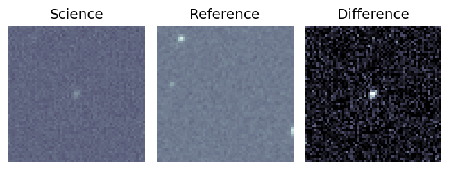
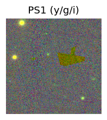
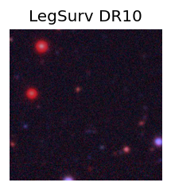
peak abs mag = -23.19 LegacySurvey: 1 sources in 3 arcsec Closest: d = 7.76 arcsec, 27.5 deg (east of north) photoz=0.52 (68% bounds 0.5, 0.57), type=REX peak abs mag = -23.67 (68% bounds -23.56, -23.87) 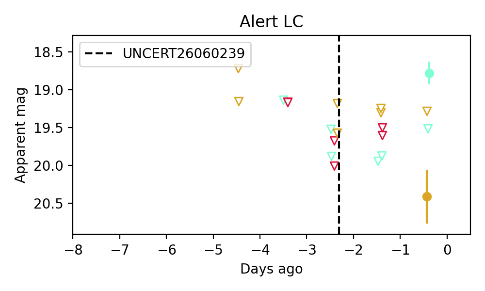
2. ZTF26aazpyws (Afterglow?) [Back to Top] [Share] [Trigger Swift] [Fritz ] [Lasair ]RA, Dec: 258.27823, -13.07278 17h13m6.78s, -13d-4m-22.02sGalactic (l, b): 9.38233, 14.921 ext(g-r) = 0.569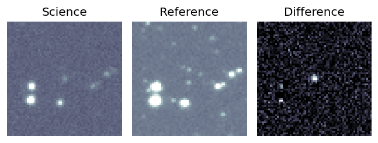
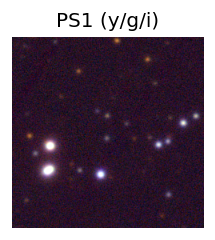
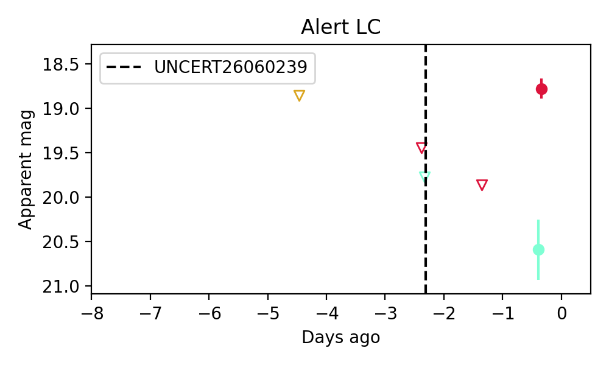
Consistent with synchrotron, g-r>0!
3. ZTF26aazqklf (Afterglow?) [Back to Top] [Share] [Trigger Swift] [Fritz ] [Lasair ]RA, Dec: 238.86632, -13.7272 15h55m27.92s, -13d-43m-37.92sGalactic (l, b): 356.34082, 29.49185 ext(g-r) = 0.164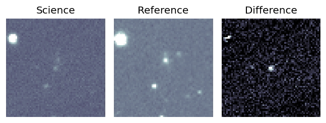
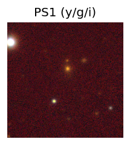
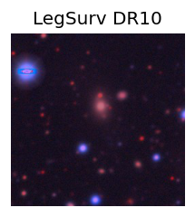
LegacySurvey: 1 sources in 3 arcsec Closest: d = 2.68 arcsec, 298.2 deg (east of north) photoz=0.5 (68% bounds 0.41, 0.55), type=REX peak abs mag = -23.95 (68% bounds -23.48, -24.21) 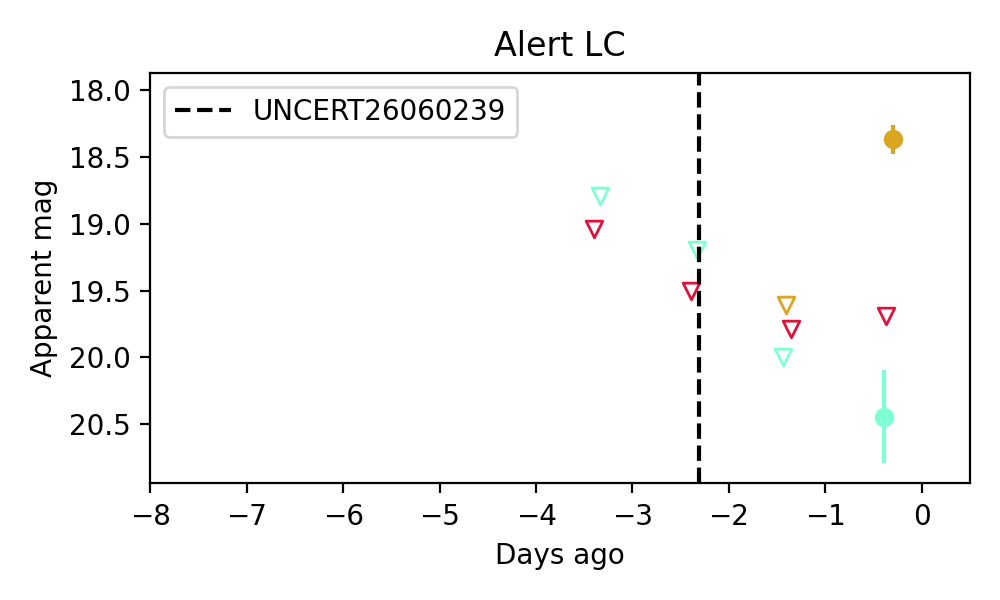
Consistent with synchrotron, g-r>0!
Section 2: Older Sources Observed Last Night (14)
0. ZTF26aayysdx (Afterglow?) [Back to Top] [Share] [Trigger Swift] [Fritz ] [Lasair ]RA, Dec: 263.3541, 37.01048 17h33m24.98s, 37d 0m37.72sGalactic (l, b): 61.75312, 30.78224 ext(g-r) = 0.041PS1: 1 source in 3 arcsec Closest: d = 8.88 arcsec photoz=0.88+/-0.25 peak abs mag = -27.50
1. ZTF26aazblss (Afterglow?FBOT?) [Back to Top] [Share] [Trigger Swift] [Fritz ] [Lasair ]RA, Dec: 216.43671, 3.89569 14h25m44.81s, 3d53m44.49sGalactic (l, b): 351.15699, 57.64926 ext(g-r) = 0.031LegacySurvey: 1 sources in 3 arcsec Closest: d = 0.61 arcsec, 265.0 deg (east of north) photoz=0.77 (68% bounds 0.36, 1.41), type=REX peak abs mag = -24.4 (68% bounds -22.43, -26.03) Consistent with synchrotron, g-r>0!
2. ZTF26aazcwph (Afterglow?) [Back to Top] [Share] [Trigger Swift] [Fritz ] [Lasair ]RA, Dec: 245.01606, -3.2654 16h20m3.85s, -3d-15m-55.43sGalactic (l, b): 10.22012, 31.27544 ext(g-r) = 0.249peak abs mag = -19.45 peak abs mag = -18.97
3. ZTF26aazdfhw (FBOT?) [Back to Top] [Share] [Trigger Swift] [Fritz ] [Lasair ]RA, Dec: 314.61419, 0.34084 20h58m27.41s, 0d20m27.02sGalactic (l, b): 49.02211, -27.7533 ext(g-r) = 0.086LegacySurvey: 1 sources in 3 arcsec Closest: d = 0.70 arcsec, 196.1 deg (east of north) photoz=1.02 (68% bounds 0.69, 1.24), type=PSF peak abs mag = -25.0 (68% bounds -23.96, -25.5) Consistent with synchrotron, g-r>0!
4. ZTF26aazhxtc (FBOT?) [Back to Top] [Share] [Trigger Swift] [Fritz ] [Lasair ]RA, Dec: 3.77529, 10.70162 0h15m6.07s, 10d42m5.85sGalactic (l, b): 108.61077, -51.15693 ext(g-r) = 0.124peak abs mag = -17.88 LegacySurvey: 1 sources in 3 arcsec Closest: d = 0.32 arcsec, 337.1 deg (east of north) photoz=0.99 (68% bounds 0.51, 1.49), type=PSF peak abs mag = -25.21 (68% bounds -23.44, -26.31)
5. ZTF26aazjyhl (Afterglow?FBOT?) [Back to Top] [Share] [Trigger Swift] [Fritz ] [Lasair ]RA, Dec: 218.32173, -12.37472 14h33m17.22s, -12d-22m-28.99sGalactic (l, b): 338.24235, 43.40527 WARNING: 2.54 deg from ecliptic plane ext(g-r) = 0.098LegacySurvey: 1 sources in 3 arcsec Closest: d = 0.14 arcsec, 256.1 deg (east of north) photoz=0.62 (68% bounds 0.29, 1.22), type=REX peak abs mag = -23.49 (68% bounds -21.58, -25.29) Consistent with synchrotron, g-r>0!
6. ZTF26aazknmk (FBOT?) [Back to Top] [Share] [Trigger Swift] [Fritz ] [Lasair ]RA, Dec: 229.41527, -24.91875 15h17m39.66s, -24d-55m-7.51sGalactic (l, b): 340.30586, 27.14429 ext(g-r) = 0.171LegacySurvey: 1 sources in 3 arcsec Closest: d = 1.16 arcsec, 71.1 deg (east of north) photoz=0.84 (68% bounds 0.4, 1.28), type=PSF peak abs mag = -25.77 (68% bounds -23.83, -26.9)
7. ZTF26aazlvwb (FBOT?) [Back to Top] [Share] [Trigger Swift] [Fritz ] [Lasair ]RA, Dec: 252.98184, 43.81952 16h51m55.64s, 43d49m10.27sGalactic (l, b): 68.79864, 39.46479 ext(g-r) = 0.016peak abs mag = -21.36 PS1: 1 source in 3 arcsec Closest: d = 2.26 arcsec photoz=0.53+/-0.16 peak abs mag = -23.09 Consistent with synchrotron, g-r>0!
8. ZTF26aazndhk (FBOT?) [Back to Top] [Share] [Trigger Swift] [Fritz ] [Lasair ]RA, Dec: 133.57271, 11.92757 8h54m17.45s, 11d55m39.24sGalactic (l, b): 215.92102, 32.61425 ext(g-r) = 0.044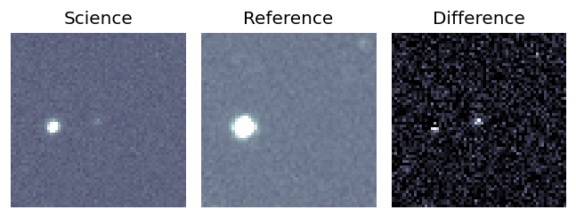
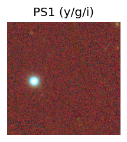
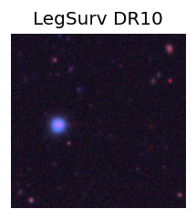
LegacySurvey: 1 sources in 3 arcsec Closest: d = 0.36 arcsec, 313.6 deg (east of north) photoz=1.1 (68% bounds 0.85, 1.42), type=REX peak abs mag = -25.22 (68% bounds -24.51, -25.9) 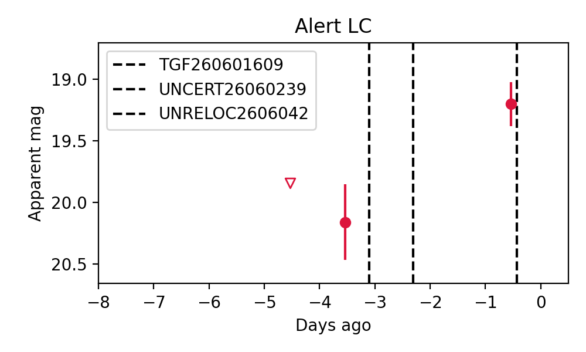
9. ZTF26aazopro (Afterglow?) [Back to Top] [Share] [Trigger Swift] [Fritz ] [Lasair ]RA, Dec: 209.60804, -17.19895 13h58m25.93s, -17d-11m-56.22sGalactic (l, b): 324.96354, 42.78856 WARNING: -4.79 deg from ecliptic plane ext(g-r) = 0.104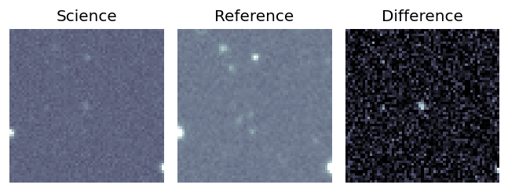
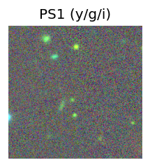
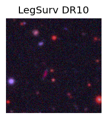
LegacySurvey: 1 sources in 3 arcsec Closest: d = 3.94 arcsec, 159.5 deg (east of north) photoz=0.55 (68% bounds 0.52, 0.59), type=REX peak abs mag = -23.48 (68% bounds -23.33, -23.65) 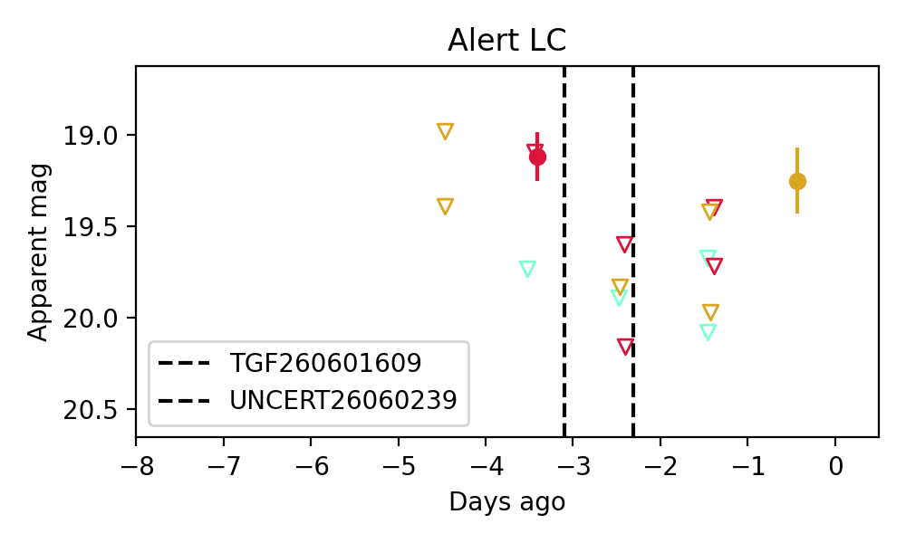
10. ZTF26aazpjdm (FBOT?) [Back to Top] [Share] [Trigger Swift] [Fritz ] [Lasair ]RA, Dec: 254.60051, -10.51601 16h58m24.12s, -10d-30m-57.62sGalactic (l, b): 9.53564, 19.33388 ext(g-r) = 0.689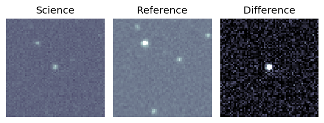
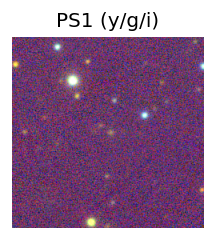
peak abs mag = -25.34 PS1: 1 source in 3 arcsec Closest: d = 0.85 arcsec photoz=0.35+/-0.19 peak abs mag = -25.28 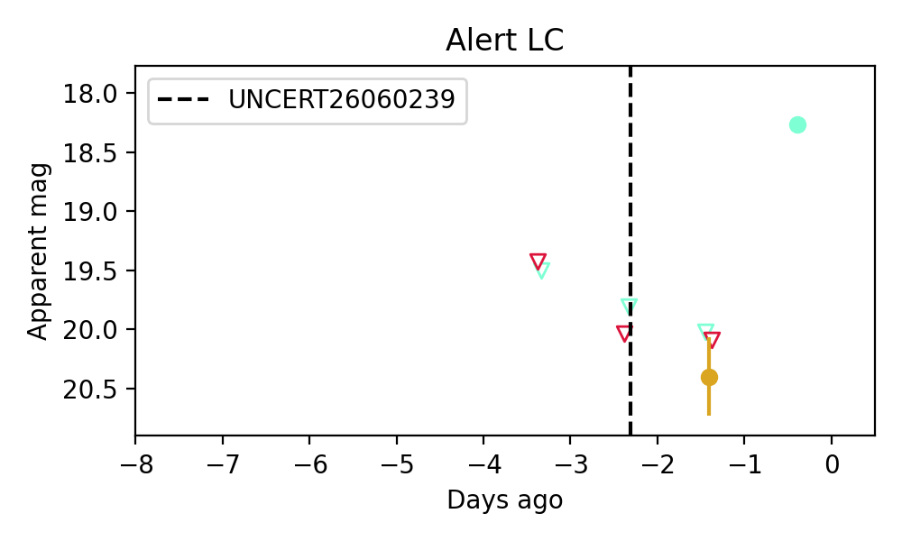
11. ZTF26aazppoh (Afterglow?) [Back to Top] [Share] [Trigger Swift] [Fritz ] [Lasair ]RA, Dec: 237.45215, -17.18375 15h49m48.52s, -17d-11m-1.50sGalactic (l, b): 352.41699, 28.08428 WARNING: 2.82 deg from ecliptic plane ext(g-r) = 0.166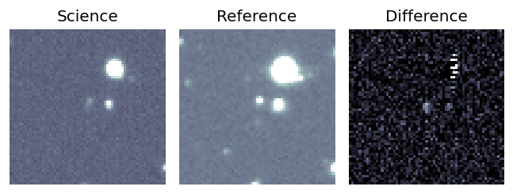
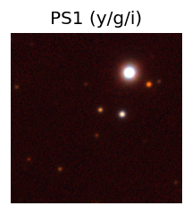
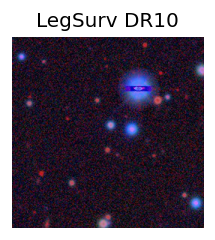
LegacySurvey: 1 sources in 3 arcsec Closest: d = 2.69 arcsec, 338.1 deg (east of north) photoz=0.09 (68% bounds 0.03, 2.21), type=PSF peak abs mag = -19.02 (68% bounds -16.49, -27.22) 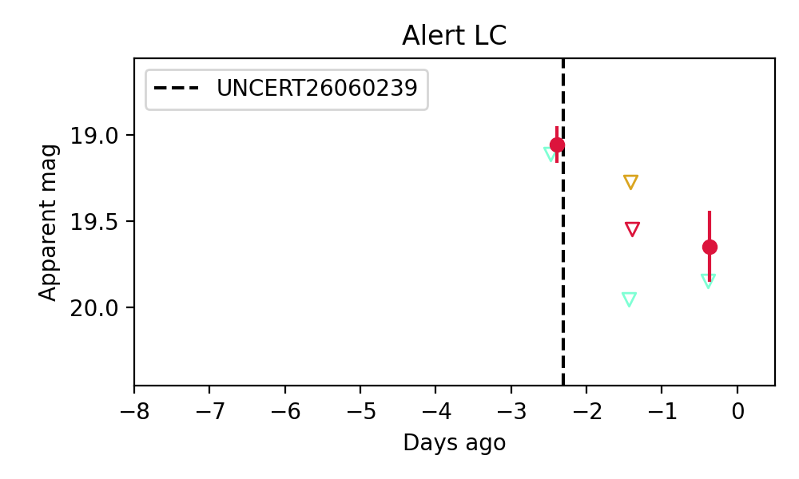
12. ZTF26aazqrmg (FBOT?) [Back to Top] [Share] [Trigger Swift] [Fritz ] [Lasair ]RA, Dec: 269.00522, 1.91724 17h56m1.25s, 1d55m2.06sGalactic (l, b): 28.25704, 13.19385 ext(g-r) = 0.32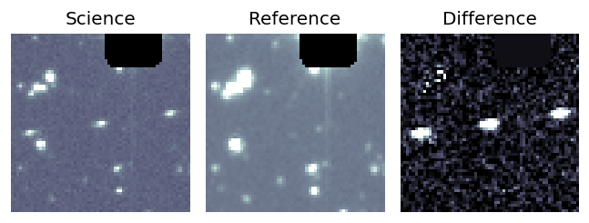
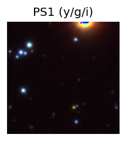
PS1: 1 source in 3 arcsec Closest: d = 4.29 arcsec photoz=0.66+/-0.10 peak abs mag = -26.14 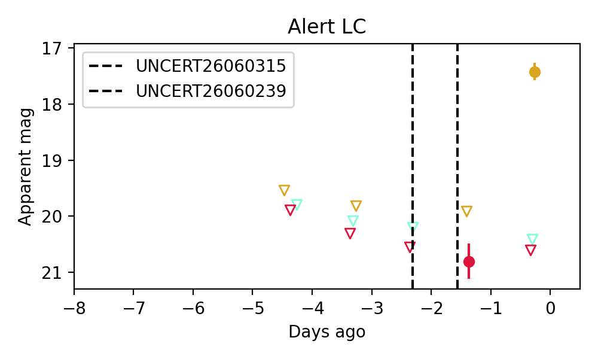
13. ZTF26aazrert (FBOT?) [Back to Top] [Share] [Trigger Swift] [Fritz ] [Lasair ]RA, Dec: 11.95668, 26.43407 0h47m49.60s, 26d26m2.64sGalactic (l, b): 121.92715, -36.43064 ext(g-r) = 0.049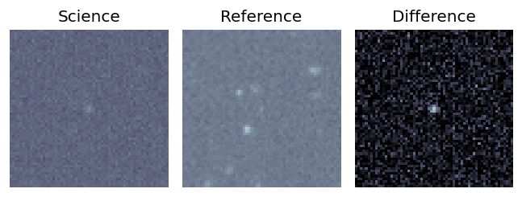
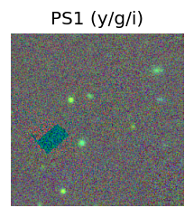
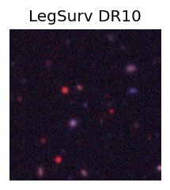
peak abs mag = -21.91 LegacySurvey: 1 sources in 3 arcsec Closest: d = 0.19 arcsec, 150.5 deg (east of north) photoz=0.38 (68% bounds 0.17, 0.76), type=REX peak abs mag = -22.22 (68% bounds -20.15, -24.01) 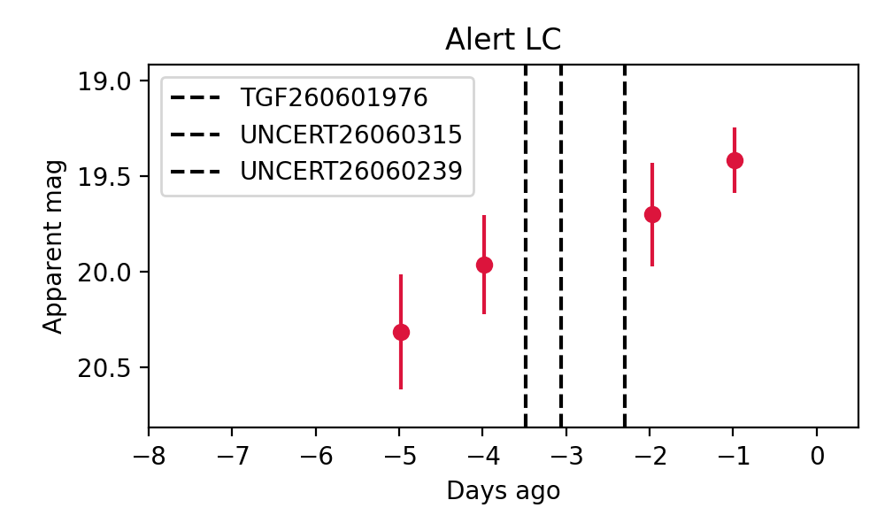